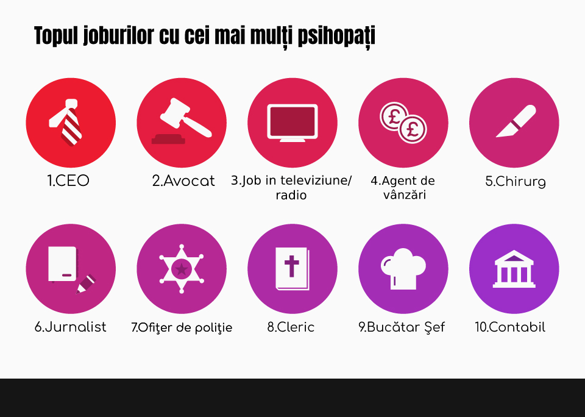

PSIHOPATIA
-cauze și efecte-
1.Introducere
Când folosim termenul de „psihopat”, cunoscut de peste 100 de ani, ne gândim la cineva precum un criminal în serie sau la cineva care face ceva ieșit din comun, dar majoritatea celor afectați de psihopatie nu sunt implicați în acte criminale.Multe persoane folosesc acest termen, dar puțini știu cu adevărat ce înseamnă.Psihopatia poate lua multe forme și este adesea confundată cu alte tulburări de personalitate precum sociopatia sau tulburare de personalitate antisocială.Opinia noastră despre psihopatie și ce înseamnă această a fost influențată de-a lungul timpului de filme, cărți și mass-media.Majoritatea psihopaților observă devreme că sunt diferiți față de restul lumii și își ascund în fiecare zi condiția cu ceea ce este cunoscut ca „masca lor”.
1.1.Ce este psihopatia?
Psihopatia este o tublurare de personalitate caracterizată printr-un comportament antisocial, trăsături egoiste, lipsa de empatie și de remușcări. Cei afectați de această problema se numesc psihopați și sunt incapabili de a creea relații semnificative cu alte persoane.Psihopații sunt indivizi carismatici care se folosesc de abilitatiile lor pentru a manipula alte persoane și a le implica în activități periculoase pentru a-și satisface propriile nevoi. Psihopații nu sunt capabili să învețe din greșeli deoarece ei consideră că tot ce fac este perfect. Deși multă lume consideră că psihopații nu prezintă deloc orice tip de emoție, aceștia defapt au sentimente rar, sentimente foarte intense și de scurtă durata numite și proto-sentimente.Cele mai întâlnite astfel de sentimente sunt: invidia, mândria copilărească, plângerea de milă superficială, resentimente sau afecțiunea superficială. Fiind o tulburare de personalitate, nu o boală mentală, se crede că psihopatia nu poate fi videcata, mai ales în căzut adulților.În schimb, tratarea copiilor cu trăsături psihopatice da rezultate într-o anumită măsură.
1.2.Unde e intâlnită?
Când vine vorba de probabilitatea de a trăi lângă un psihopat, șansele sunt destul de mici. Conform psihologului Paul Babiak, unul din 100 de oameni este probabil să aibă trăsături psihopatice, iar șansele cresc pe măsură ce urcăm în importanța locului de muncă. Astfel unul din 25 de administratori și directori este psihopat.Motivul este că psihopații sunt atrași de aceste locuri de muncă deoarece le oferă bani și prestigiu. De asemenea bărbații au de zece ori mai multe șanse să aibă psihopatie decât femeile.În lumea occidentală există mai mulți psihopați decât în lumea orientală.
1.3.Avantajul in societate
Psihopații au nevoie de mai puțin somn decât ceilalți oameni și sunt foarte activi fizic.Pot fi foarte utili și necesari în anumite momente pentru că au nervi de oțel și sunt capabili să ia decizii rapide.Astfel ei sunt buni afaceriști, soldați și chirurgi. Adesea ajung să aibă locuri de muncă importante și să fie respectați de multă lume, de aceea dacă comit vreo infracțiune multă lume este șocată deoarece nu se așteptau ca o persoana cu presitgiu să fie implicată in astfel de activități. Nu se tem să calce pe nimeni în picioare în drumul lor pentru a ajunge sus.Se muncesc până la epuizare pentru ei și pentru compania la care lucrează. Într-o societate tradițională toate aceste caracteristici sunt lucruri rele, dar într-o societate în care eficientă, deciziile rapide, lipsa empatiei și timpul sunt foarte importante, aceste lucruri devin pozitive.